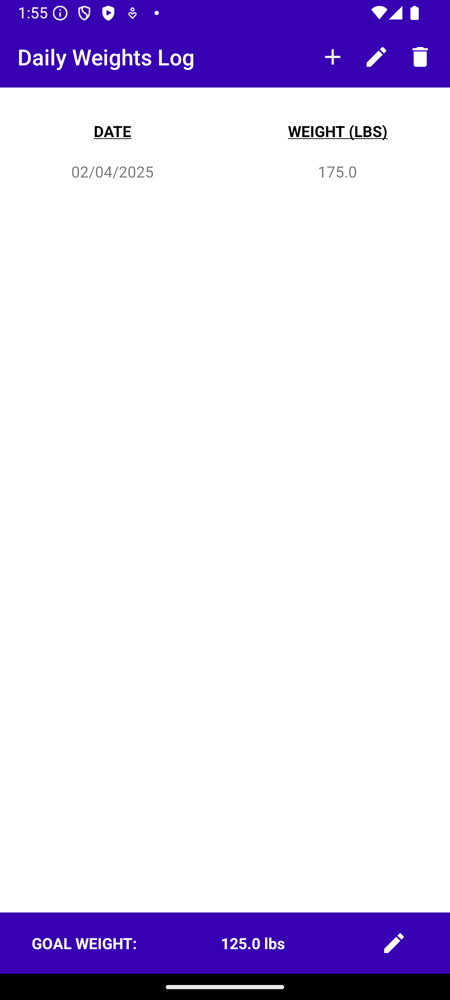
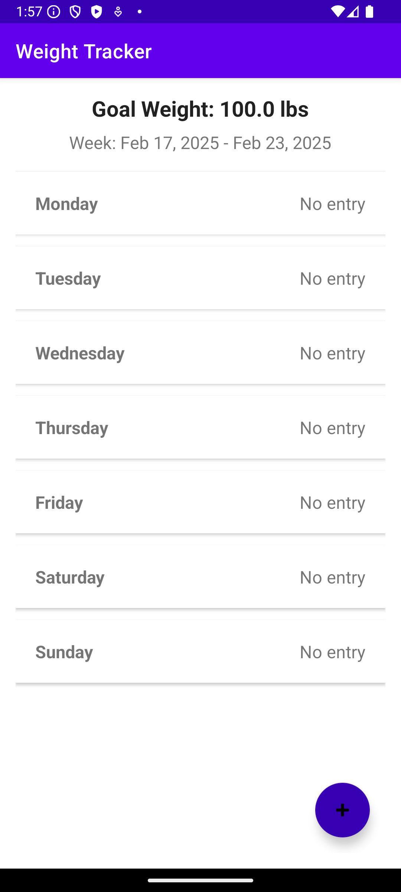

The Weight Tracker Application was originally developed during CS-360 Mobile Architecture and Programming in March 2024. It allows users to log weight entries, set target goals, and track progress over time with features such as user authentication, CRUD operations, and database-driven data persistence using Java, Android Studio, and Room Database.
Before Enhancement
After Enhancement
This artifact highlights my expertise in software engineering, database optimization, and UI/UX design. The enhancements significantly improved performance, security, and user experience, aligning with industry best practices.
Throughout this enhancement process, I gained valuable experience in performance tuning, database optimization, and debugging complex UI interactions. The shift from daily logging to week-based tracking improved efficiency, and implementing lazy loading mechanisms reduced UI lag.
Overcoming challenges such as database migration without data loss, fixing RecyclerView UI bugs, and optimizing LiveData updates reinforced my problem-solving skills.